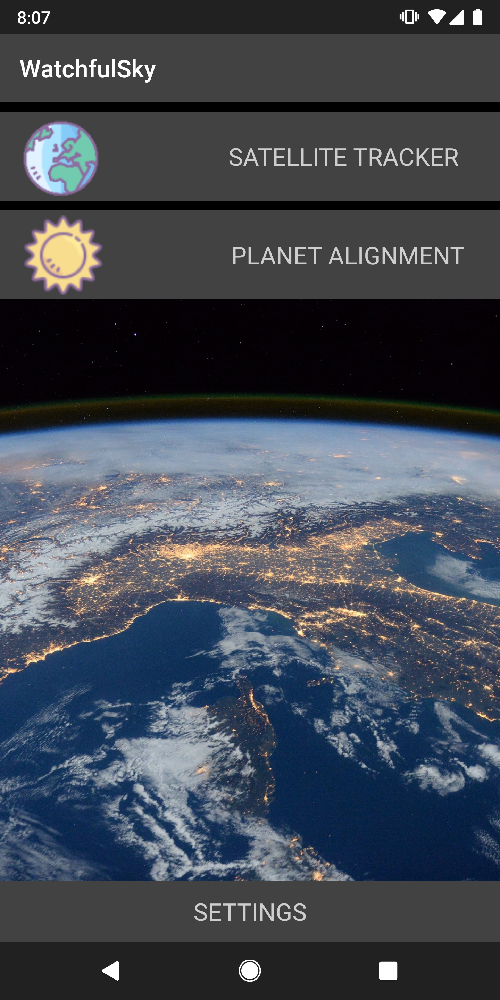
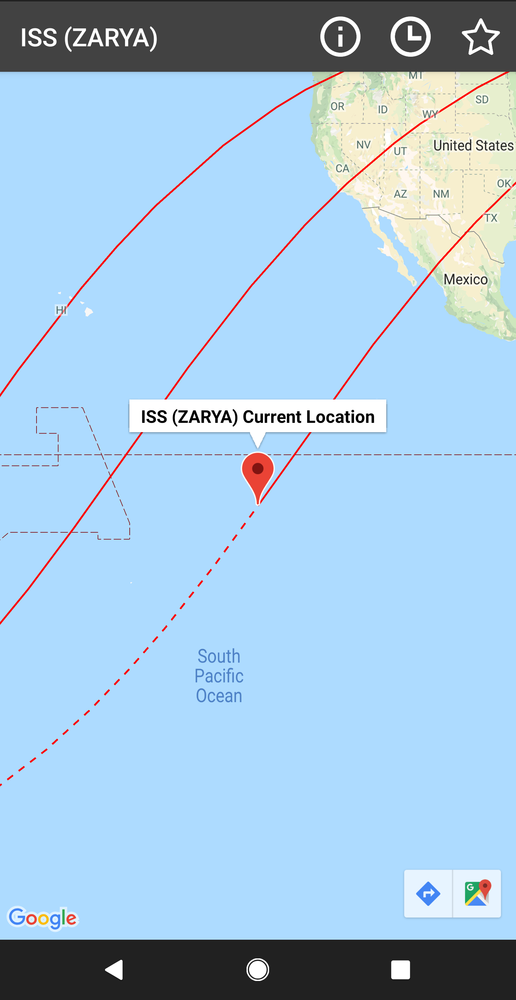
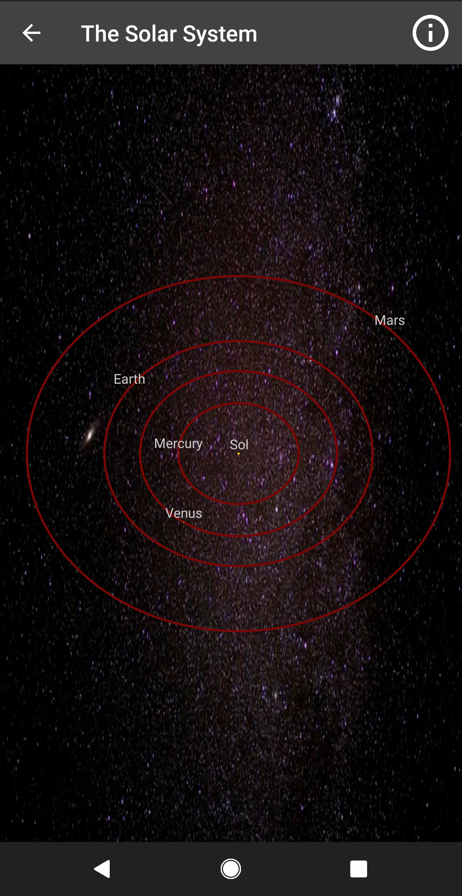
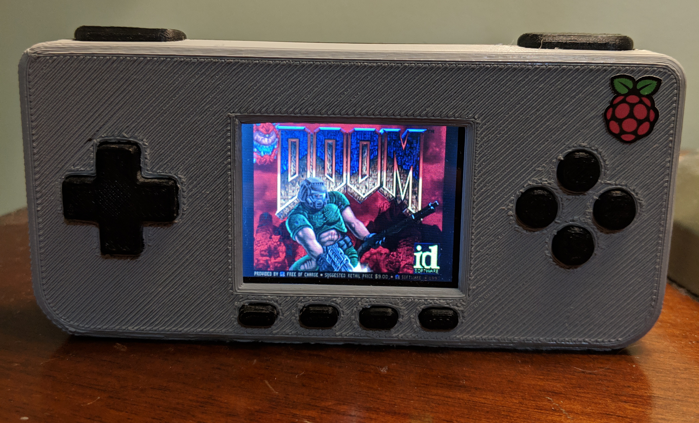

WatchfulSky is an Android application written in Java that allows users to track satellites in real time and view the current arrangement of the planets. Satellite information is collected in the form of NORAD two-line element data from Celestrak. Orbital calculation are then completed using Orekit.
|  |  |  |
From the main screen the user can navigate to the satellite tracking or planet tracking functionality.
When the satellite tracking option is selected a list of satellites will appear allowing the user to pick any of the NORAD registered satellites for tracking. Once a satellite is selected its current position is plotted on google maps along with its former and future paths. From the maps screen the user can view information about the satellite, add the satellite to the favorites list, or use the time picker. The time picker allows the user to see where a satellite will be at a user designated time by adding a new marker.
When the plant alignment option is selected a movable view of the solar system is displayed allowing the user to explore the current layout of the planets and read information about each planets movement.
The code can be viewed at the github repo
The Folklore Alexa skill is a dungeon crawling role-playing game, the player dictates their actions to Alexa, while Alexa describes rooms and enemies to the player. The player is able to battle enemies, talk to characters, and travel through the various settings.
The skill was written in Python and is hosted on Amazon Web Services.
Folklore can be downloaded from the Amazon Canada Alexa Skill Store
The code can be viewed at the github repo
The piGRRL Zero is a handheld gaming device running RetroPie originally designed by Adafruit. The project consisted of soldering the components together, installing the RetroPie OS, and 3D printing the buttons and enclosure.
The system has a USB port for adding video game ROM’s, a micro USB port for charging, and a toggle switch for power.
Parts:
1x Adafruit PiTFT 2.2"
1x Raspberry Pi Zero
1x PowerBoost 1000C
1x 2000mAh Battery
10x 6mm Tactile Buttons
1x Slide Switch
1x USB Mini Wifi Adapter
1x Tiny OTG Adapter - USB Micro to USB
2x PiGRRL Zero Gamepad PCBs
1x 2x20-pin Strip Dual Male Header
Final Result:
